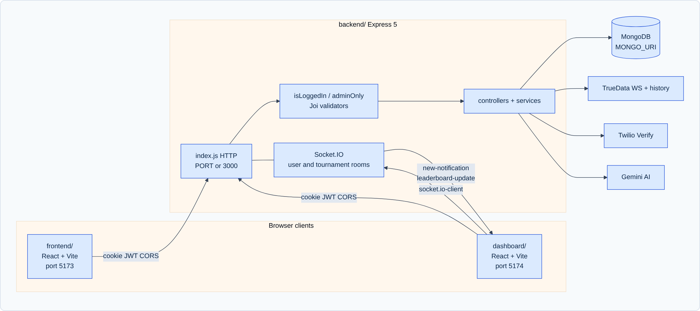
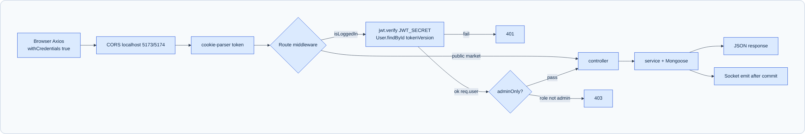
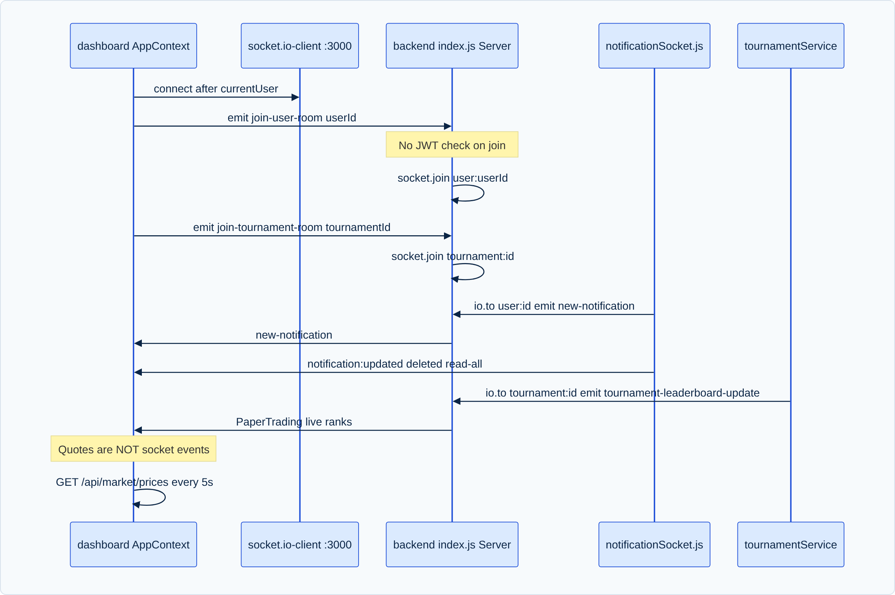

The system utilizes a modern, unified full-stack architecture that cleanly separates client presentation from backend domain logic while enabling seamless single-origin execution without cross-origin resource sharing (CORS) friction.

frontend/ (marketing, landing pages, education) and dashboard/ (Kite trading terminal). In AI Studio and production deployment, these are unified under a single origin on port 3000, eliminating browser cross-port redirects.vite.middlewares), handling HMR and JSX on-the-fly. In production, pre-compiled static assets in dist/ are served directly with an SPA catch-all route.cors({ origin: true, credentials: true }): Permits secure credentialed requests.cookieParser(): Extracts the token cookie containing the signed JSON Web Token.isLoggedInMiddleware.js: Decodes JWT, validates session active status, and checks tokenVersion to support global logout.orderValidation.js / validateUser.js: Joi schema validation catching invalid inputs before controllers execute.createOrderServices.js, tournamentService.js, aiService.js, trueDataService.js).user:{userId} and tournament:{id}).
When a user initiates an action in the UI (for example, clicking "Buy 10 Reliance CNC at ₹2,525"):
POST /api/orders request with { withCredentials: true }, automatically attaching the browser's HTTP-only cookie.isLoggedIn extracts the cookie, runs jwt.verify(token, JWT_SECRET), queries the user model to verify tokenVersion, and attaches req.user = { userId, role, status }.req.body against orderValidationSchema.js. If validation fails (e.g., negative quantity or missing symbol), a 400 Bad Request is returned immediately without touching the database.orderController.js invokes createOrderServices.js, passing the sanitized payload and authenticated userId.qty * price.availableBalance >= requiredAmount.availableBalance -= requiredAmount, usedBalance += requiredAmount.completed.new-notification to user:{userId}, and HTTP 201 Created is returned to the client. The frontend AppContext receives the response and triggers state re-fetching.
The real-time infrastructure provides sub-second push updates for:
tournament:{id}.